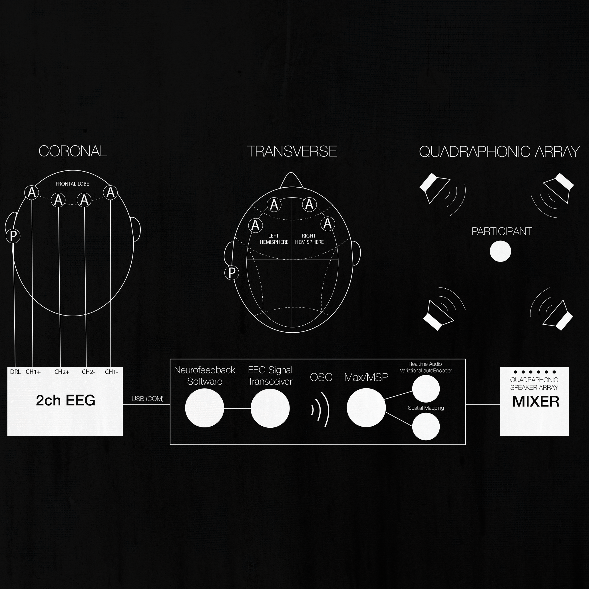
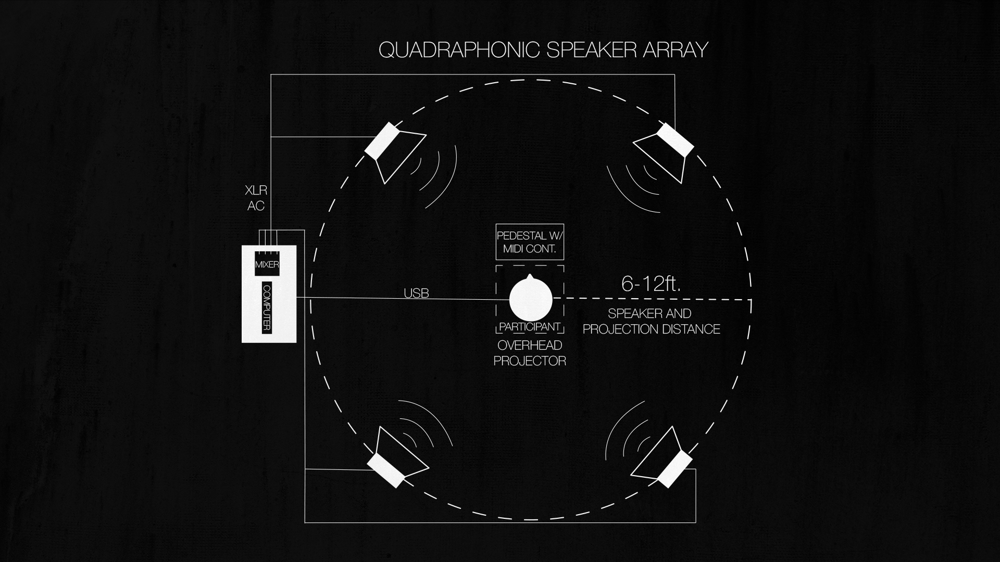
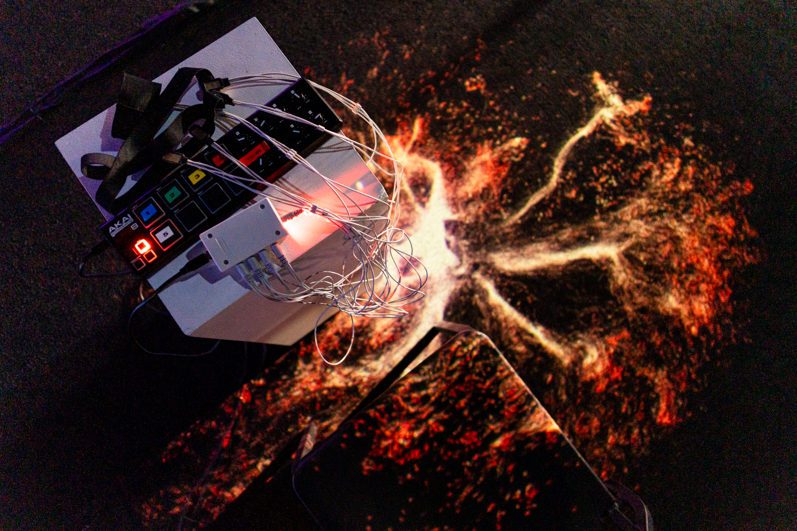

Irreductions
June 21, 2023 at Gray Area, San Francisco



Irreductions is an experiment in positive feedback between the human brain and its external representation. Using a modified electroencephalogram (EEG) that measures the electrical activity of the brain, the participant's brainwaves are translated into sonic data in the form of live generative sound using a variety of generative and realtime neural audio synthesis techniques. These discrete streams of auditory data can be selected by the participant using the MIDI keyboard in front of them. The selected sound is then spatialized in quadraphonic sound around the participant with each location in space corresponding to activity within discrete regions of the frontal lobe associated with higher level executive function. At the same time, an audio reactive 3D particle system is projected from above the participant, filling the space around them with a visualization of their brain's sonic representation. This allows the participant to interface with their own brain activity through sight and sound. As the participant's thought processing increases, so too does the corresponding auditory representation of their frontal lobe, which upon being heard by the participant, will then be incorporated into their own frontal lobe activity and fed back into the audio and particle system, blurring the lines between the participant's neural activity and its external representation.
The name Irreductions derives from a treatise by the philosopher Bruno Latour of the same name in which he establishes a metaphysical network of interconnected actors, human and inhuman, none of which can be considered either reducible or irreducible to the others. Irreductions seeks to capture this rhizomatic quality between the internal qualitative experience of the participant and the way in which this experience is represented in the external world. This work is part of an ongoing project to explore methods of collapsing the distance between the body and its expression through sound and music.
Cascades of Refinement
May 12, 2023 on Important Records
Cascades of Refinement is Parish's debut album released under his own name.
The techniques that defined his influential early sound have been refined into a flawless hybrid of analog and digital textures which give his post-minimalist compositions an unmistakably personal expressivity. Classical instruments are mutilated and transmuted into razor-sharp shards of glass suspended on piano wire above warped opalescent metal while never losing sight of their tonal integrity. Much like the impartial juxtaposition Parish employs in his timbral exploration, each composition explores the concepts of beauty and gentleness through and with extremity, violence, and chaos as equal counterparts, with each successive piece refining and relieving the artificial tension between these states. Employing use of the Una Corda, prepared piano, bowed piano, plucked piano, harpsichord, church organ, untuned violin, voice, synthesizers, and resampled field recordings, Cascades of Refinement lies somewhere in the indefinite space between acoustic and electronic and is beholden to neither.
Parish's initial electroacoustic experiments with piano and strings were interrupted by the pandemic lockdown when he was limited to sampled instrumentation and digital processing available on a computer. Out of this necessity evolved an appreciation for the incidental nature of digitally sampled acoustic instrumentation and the unpredictability of its interaction with digital signal processing.
As work on Cascades of Refinement continued and acoustic recording was reintroduced, the focus turned to the tension between recorded and sampled instrumentation, with the goal of integrating the two into a singular indistinguishable material to be warped and shaped together. Each of the four pieces of the Cascade series explores this tension, successively integrating and collapsing their distinction with each piece.
The subtle artifacts of digital processing and incidental mechanical sounds of the acoustic are amplified and given presence alongside the tonal elements of each piece until a point of indivisibility is reached. The sound of a bow scraping along a string or a granular buffer freezing are neither discarded nor hidden, but selected as the ripest material to accompany and structure each composition. Cascades of Refinement is a dialogue between organic and digital, between the mercurial and infinitely reproducible, not as opposites, but as mereologically cohabiting counterparts with equal expressivity.